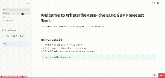

Open live appWhatsTheRate
A web app that analyses and forecasts the EUR/GBP exchange rate and tells you when to transfer.
0.003GBP forecast error
3analysis pages
1x dailyautomatic retraining
A Streamlit app with a landing page and three pages: Dashboard, Predictions and Optimal Transfer. A daily automated pipeline downloads market data and retrains the model, so the app is always current.
PythonStreamlitScikit-learnyfinancePandasGitHub ActionsJoblibMatplotlib
The whole project is written in Python, plus one YAML file for automation.
- Frontend: Python with Streamlit. The interface is built with Python calls, with no hand written HTML, CSS or JavaScript.
- Backend: Python. yfinance and pandas handle data, scikit-learn and joblib handle the model.
- CI/CD: YAML for the GitHub Actions workflow, running on Python 3.10.
- Pipeline: a GitHub Actions workflow runs at midnight UTC. It downloads one year of Yahoo Finance data, computes a 30 day moving average and retrains a Random Forest model.
- Pages: the Dashboard shows the latest rate against the average over the last 60 days. Predictions shows the next session rate and whether it will rise or fall. Optimal Transfer finds the cheapest weekday to buy euros.
- Recommendation: more than 1% below the average gives STRONG BUY, more than 1% above gives WAIT, anything else is NEUTRAL.
- Mean absolute error of about 0.003 GBP in model evaluation notebooks.
- Data and model loading are cached separately, so pages stay fast.
- Every page checks for missing data and shows a clear state instead of crashing.